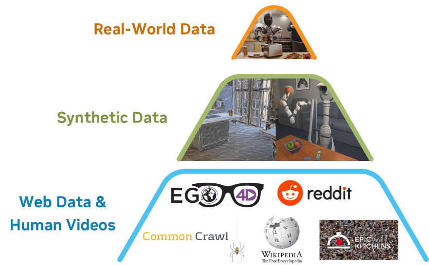
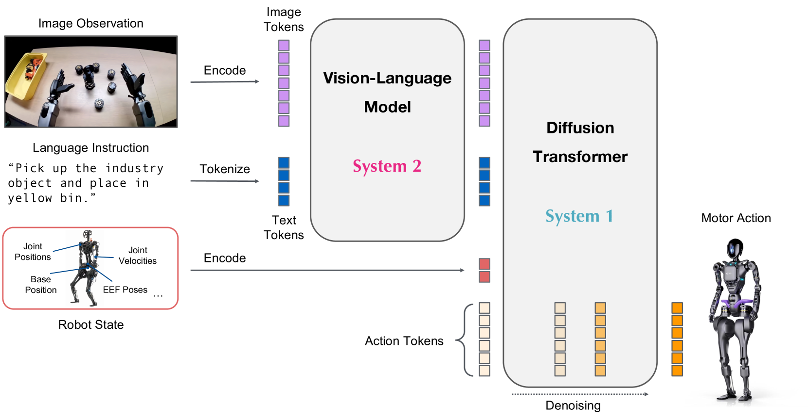

제출: 2025년 3월 18일 (v1), 3월 27일 (v2) · 백본 Eagle-2 VLM 1.34B · 총 2.2B · 학습 1024×H100
한 줄 요약 (TL;DR)
System-2 Eagle-2 VLM(1.34B, 10Hz) + System-1 flow-matching DiT(120Hz, H=16)의 이중 시스템 오픈소스 휴머노이드 파운데이션 모델. 실로봇·인간 영상·합성(시뮬+뉴럴 트래젝토리)의 Data Pyramid로 사전학습. 3개 시뮬 벤치 평균 45.0(diffusion policy 33.4 대비 +11.6pt), Fourier GR-1 실기 4개 카테고리 평균 76.8(DP 46.4 대비 +30pt), 10% 데이터에서도 42.6로 DP 46.4 근접.
1배경 · 문제의식
휴머노이드는 다양한 embodiment·자유도·태스크에 걸쳐 일반화해야 하지만, 로봇 실데이터는 소규모·값비쌈. 저자들은 (a) 시뮬레이션 대량 자동 생성, (b) 인간 영상, (c) 실로봇 데이터를 한 데이터 피라미드로 묶고, (d) 언어 이해 담당의 느린 System-2 VLM과 (e) 반응성 담당의 빠른 System-1 flow-matching Diffusion Transformer를 엔드투엔드 공동학습해 이 문제를 풀고자 한다. 결과물을 오픈소스로 공개해 커뮤니티가 활용할 수 있게 하는 것이 목표.
2핵심 Contribution
이중 시스템 VLA 파운데이션 모델 (총 2.2B) — System-2로 Eagle-2 VLM(1.34B, layer-12 특징, 10Hz)과 System-1으로 flow-matching DiT(H=16 액션 청크, 120Hz, 63.9ms). Embodiment별 state/action MLP로 탁상형·양팔·휴머노이드 모두 지원.
Data Pyramid: 인간 영상 + 시뮬 + 뉴럴 트래젝토리 + 실기 — 인간 데이터(Ego4D 등)에 LAPA 잠재 액션, 실기 데이터엔 GT 액션, 합성 영상엔 IDM 유사 액션을 부여해 이질 데이터에서 공동학습. DexMimicGen 6,500시간 시뮬 궤적 + 뉴럴 트래젝토리 300k(3,600×L40, 1.5일).
실기 실증 + 오픈소스 공개 — Fourier GR-1 실기 4카테고리 평균 76.8, 사전학습만으로 zero-shot bimanual handover 76.6%, novel-container 73.3%. 코드·체크포인트 모두 공개해 후속 연구가 파인튜닝 가능(A6000 단일 GPU).
3Method
이중 시스템 구조 (System 2 + System 1)
System 2 (VLM): NVIDIA Eagle-2 VLM(1.34B). 224×224 이미지 → 프레임당 64 토큰, chat 포맷의 언어 지시 함께 입력. 최종층이 아닌 layer 12의 hidden features를 System 1에 넘겨 속도·성능 개선. L40 GPU에서 10Hz. System 1 (DiT): Flow matching을 쓰는 Diffusion Transformer. 노이즈 낀 액션 청크 Atτ(H=16 시점)와 상태 qt, VLM 특징 ϕt를 입력. Cross-attention으로 VLM feature를 조회하고 액션 임베딩 간 self-attention. Embodiment마다 별도 MLP 인코더·디코더로 가변 자유도 지원. 120Hz 동작, 16-액션 청크당 63.9ms.
Flow-matching Loss (수식)
학습 목적은 flow-matching 회귀: ℒfm(θ) = 𝔼τ‖Vθ(ϕt, Atτ, qt) − (ε − At)‖². 액션 인코딩엔 확산 timestep + 노이즈 액션을 함께 embed. 추론 시 K=4 스텝 forward Euler로 denoise.
평균 +11.6pt vs Diffusion Policy. GR-1 Tabletop은 18개 unseen source→target rearrangement + 6 articulated.
Table 3 — Fourier GR-1 실기 4카테고리 (전체 데이터 vs 10%)
Task Category
DP (10%)
DP (Full)
N1 (10%)
N1 (Full)
Pick-and-Place
3.0
36.0
35.0
82.0
Articulated Objects
14.3
38.6
62.0
70.9
Industrial Tasks
6.7
61.0
31.0
70.0
Coordination
27.5
62.5
50.0
82.5
Average
10.2
46.4
42.6
76.8
10% 데이터 GR00T-N1(42.6)이 Full-data DP(46.4)와 거의 대등 → 사전학습이 데이터 효율을 크게 끌어올림.
Zero-shot 사전학습 평가 (파인튜닝 없이)
Coordinated bimanual handover: 76.6% (11.5/15)
Novel object → 미지 container 배치: 73.3% (11/15)
5Ablation (주요 발견)
뉴럴 트래젝토리 co-training: RoboCasa 100 demo 학습 시 +8.8pt, 실기 산업 태스크 10% 데이터에서 +5.8pt — 실기 부족 상황일수록 이득이 커짐.
LAPA vs IDM:저데이터(30 demo)에선 LAPA가 우세, 데이터가 늘면 IDM 이점이 커짐 — 라벨링 전략을 데이터 규모에 맞춰 선택해야.
VLM 중간층(layer 12) 특징이 최종층보다 정책 학습에 유리 — VLM 최상단 CLS 특징은 언어 편향이 커 저수준 시각·기하 정보가 압축된다.
6핵심 Figure / Table

Figure 1 — Data Pyramid. Base(대량 인간 영상) → Middle(합성/뉴럴 트래젝토리) → Peak(실로봇)로 층을 쌓고, 각 층 사이의 규모 차와 embodiment 특이성을 이 논문의 핵심 구성으로 삼음. (출처: arXiv:2503.14734)

Figure 2 — GR00T N1 아키텍처. System-2 Eagle-2 VLM이 이미지·언어를 받아 layer-12 hidden을 System-1 DiT에 넘기고, DiT가 flow-matching으로 H=16 액션 청크를 노이즈 → 청정 상태로 반복 denoise. Embodiment별 state/action MLP가 자유도 차를 흡수. (출처: arXiv:2503.14734)
Table 3 (실기 4카테고리) — 오픈소스 파운데이션의 실기 성능 증거. 10% 데이터로 42.6%를 내며, 전체 데이터로는 76.8%로 DP 46.4를 크게 상회. 사전학습 스케일이 데이터 효율의 핵심임을 보이는 표.